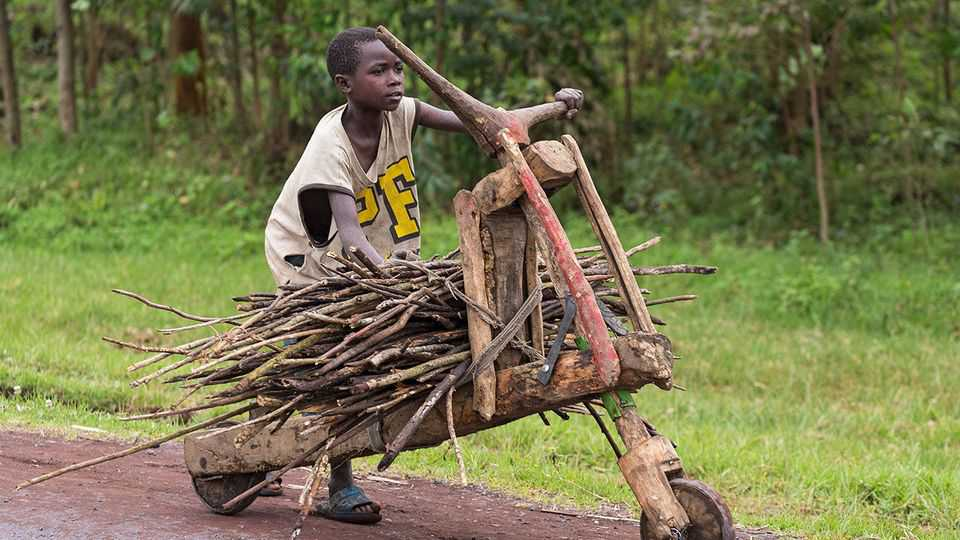

The parable of the tshukudu, Goma’s quintessential transport
War and cheap Chinese tricycles are disrupting a Congolese city’s idiosyncratic scooter
June 4th 2026

For many outsiders the symbol of Goma is a young man with an automatic rifle. Last year the city in eastern Democratic Republic of Congo was captured by M23, rebels backed by next-door Rwanda. It remains occupied or, according to M23, “liberated”. Recently its name may also have evoked images of health workers in hazmat suits, because of the Ebola outbreak that has spread from the province to the north.
The true symbol of Goma, however, is an idiosyncratic, man-powered wooden scooter known as a tshukudu. It looks as if it has been drawn by a child, with its simple, angled frame and two-metre-long deck. Yet as a way of carrying cargo in this chaotic city, it has proved perfect. It is narrow enough to zigzag through busy markets. Rubber strips around the wheels and a spring beneath the cow-horn handlebars help absorb the shock of potholes. It can bear more weight than a bicycle: riders brag about carrying loads of more than 500kg on a single tshukudu. At $200, with no petrol costs, it is cheaper than a motorcycle.
The tshukudu was apparently invented in the 1970s by farmers on the mountain slopes around Goma to take produce downhill. To this day tshukudus allow young men to make ends meet. “The tshukudu is good because we don’t have jobs,” says Sadiki, a 26-year-old whose heaviest load was 50 cans of petrol and who says he once carried a cow. “It was not alive,” he clarifies.
The war between Congo and M23 is hurting business. Banks remain closed. Farmers have fled their land. Many aid workers have left. Sadiki says that shoppers who once bought 20kg of rice buy just 5kg at a time, so they need him less. Meanwhile cheap motorised cargo tricycles from India and China—known as “three hills” after the number of wheels—are competing for the remaining heavy loads. “The three-hill drivers are taking our market,” sighs Bahati, 23.
Yet the city’s emblem will endure. The UN peacekeeping mission that has been in Goma for 30 years once sponsored a tshukudu race; the winner painted his white with blue UN letters. Souvenir sellers flog little wooden versions. In the centre of town is a statue of a man on his tshukudu. (In a very Goma twist, the sculptor was an army colonel.)
As a small crowd waits to take selfies, a local guide watches and says: “When you go to Paris, you take a photo of the Eiffel Tower. When you come to Goma, you must take one of the tshukudu.” ■
Sign up to the Analysing Africa, a weekly newsletter that keeps you in the loop about the world’s youngest—and least understood—continent.